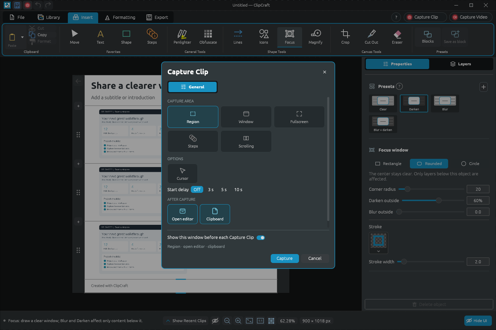
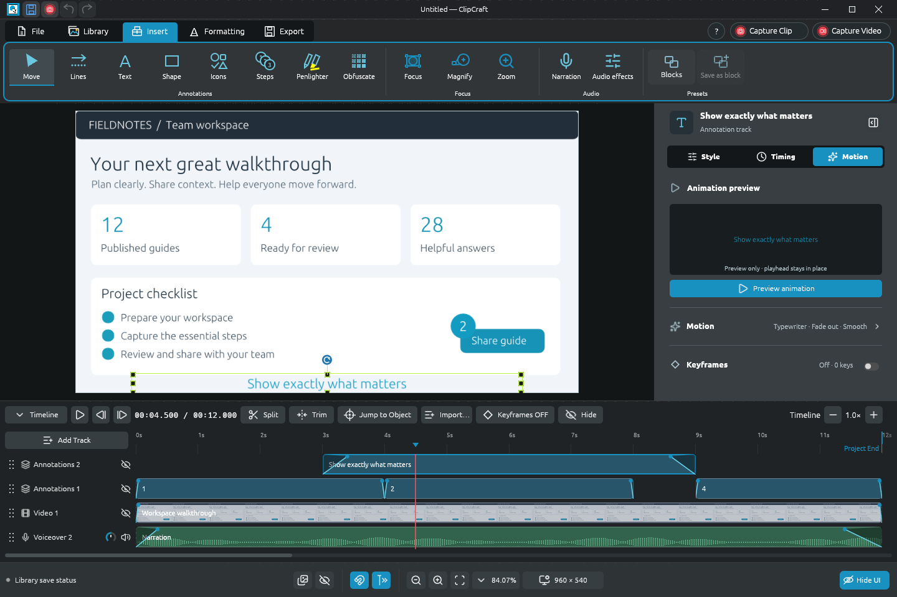
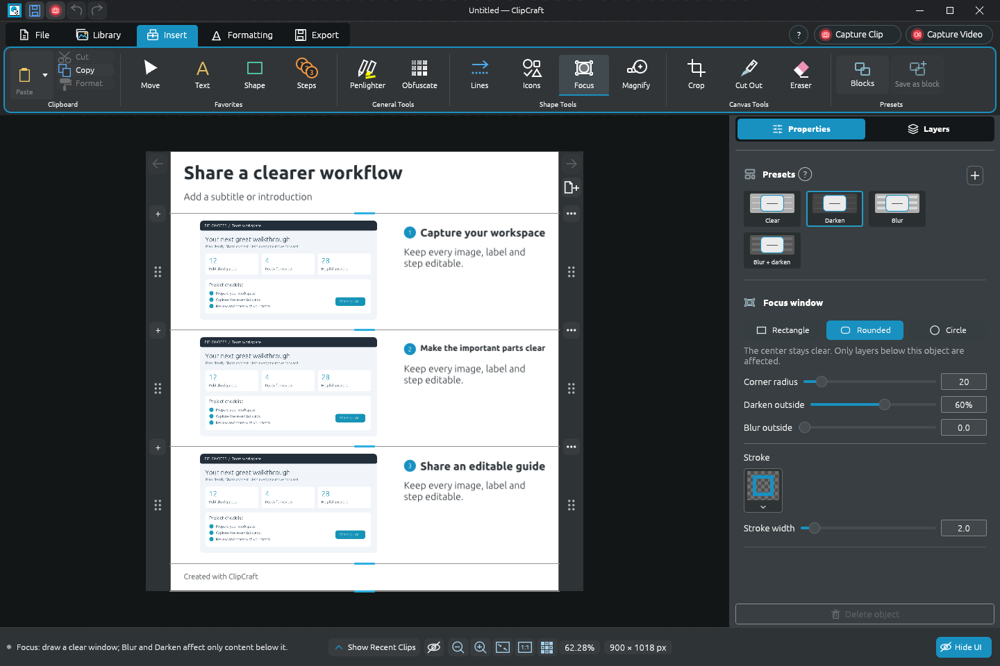
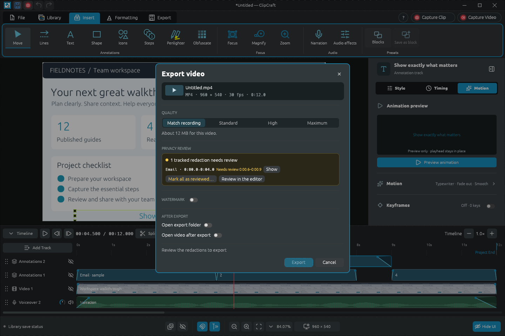
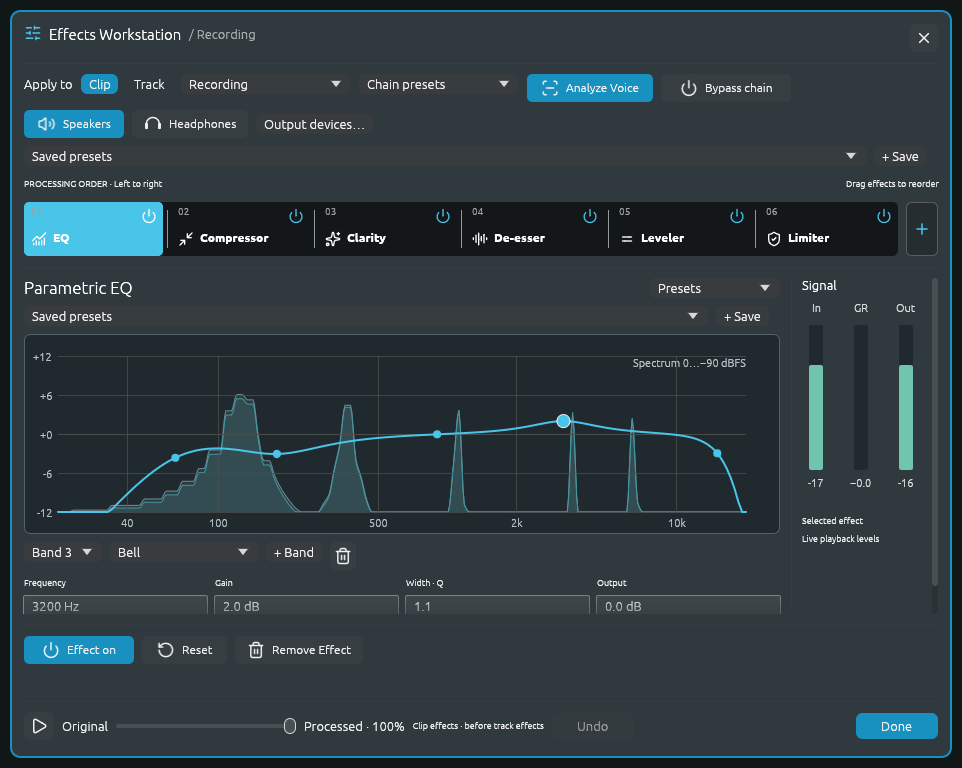
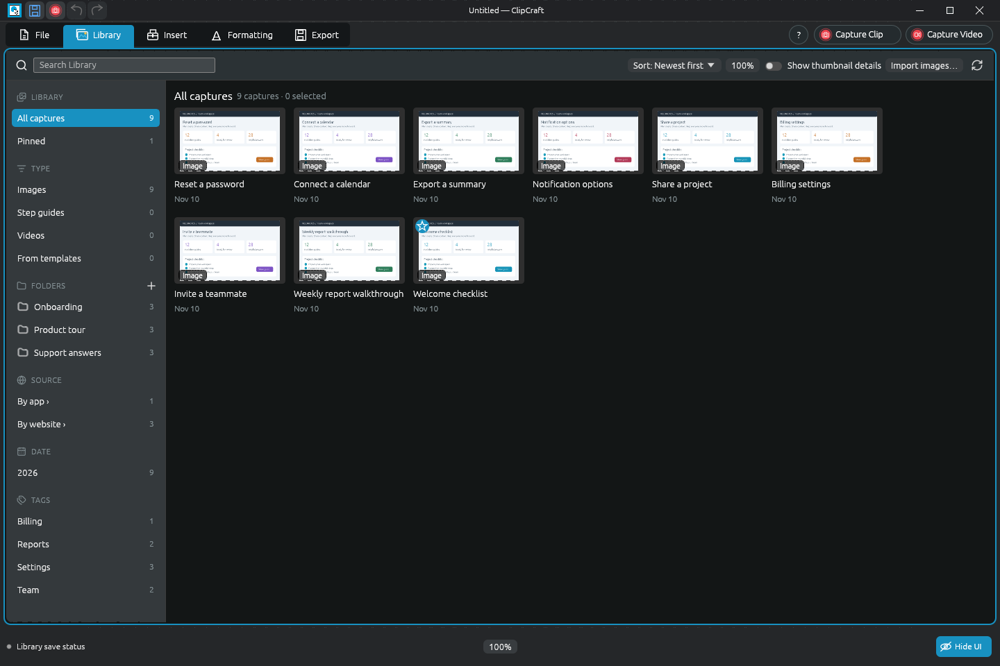
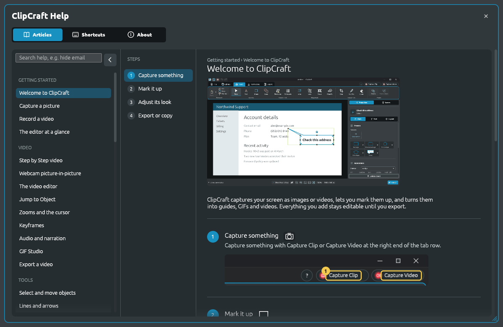

01 Capture
Capture Clip & Capture Video
Region, window or full screen. Stitch a scrolling region, or record your clicks as an editable Step by Step guide. Capture from a hotkey or the tray, with a delay if you need one.
Windows · Open source · Beta 3
Image and video capturing for the everyday user with feature-rich design tools for power users.
For Windows 10/11 · MSI installer (64-bit) · 67 MB

New name, same app. ClipDesigner is the new name for ClipCraft. Beta 3 still installs and appears as ClipCraft.
01 / The toolkit
Capture, annotate, edit, narrate and review in one window. Every object stays editable until you export, so the guide you made last month is still a starting point, not a flattened picture.

01 Capture
Region, window or full screen. Stitch a scrolling region, or record your clicks as an editable Step by Step guide. Capture from a hotkey or the tray, with a delay if you need one.

02 Image guides
Arrows, callouts, Icons, numbered Steps and Penlighter, all from presets. Focus and Magnify draw the eye. Multipage layouts with Page Setup, headers, footers, bleed and crop marks.
03 Video editor
Tracks for video, pictures, narration and annotations. Zooms that follow the recorded cursor, keyframes, webcam picture-in-picture, and GIF Studio for short loops.

04 Privacy review
Find Sensitive Info reads images and video on your PC. Redactions follow text as it moves or scrolls, and Export video lists every one that still needs your review.

05 Narration & audio
Record takes, then shape them with an ordered chain of EQ, compression, clarity, de-essing, leveling and limiting. Analyze Voice suggests settings; the original is kept.

06 Library
Search everything you've captured. Sort it into folders, tag it, pin favorites, and filter by type, app, website or date.

07 Help
Illustrated, searchable articles cover every tool. Hover any control for a tip, or press F1 to open its article. Preferences hold shortcuts, capture settings and the toolbar.
02 / Who it's for
Most power users start with a quick screenshot. It's the same app and the same project files, so the depth is there when you need it.
Power users
Everyday explainers
03 / Principles
Captures, projects and your Library stay on your PC. There's no ClipDesigner account to create.
The app doesn't report what you do, and there's no background updater. You decide when to download a new version.
Crops, filters, perspective and redactions never silently flatten. Drags and sliders preview live, with one Undo per change.
Detection suggests and you decide. Exported redactions remove what they cover. Detection can miss things, so ClipDesigner shows you what still needs a look.
A real Windows app with its own rendering engine, so the preview you edit matches the file you export.
Apache-2.0, with every line on GitHub. Each release ships with checksums, an SBOM and its source archive.
04 / Get started
Version 1.0.0-beta.3 for Windows 10 and 11 (64-bit). Free, with no account and no subscription.
Before you install
Read the full beta notes and the security and data model.
Open source · Free
Report a bug, suggest a feature or follow development on GitHub.